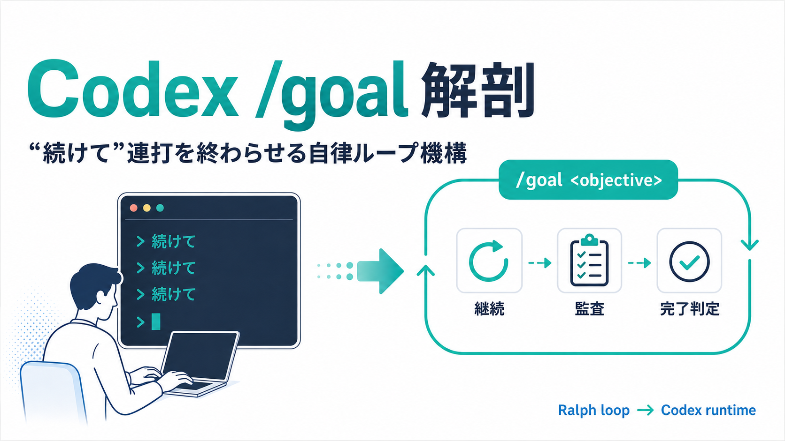
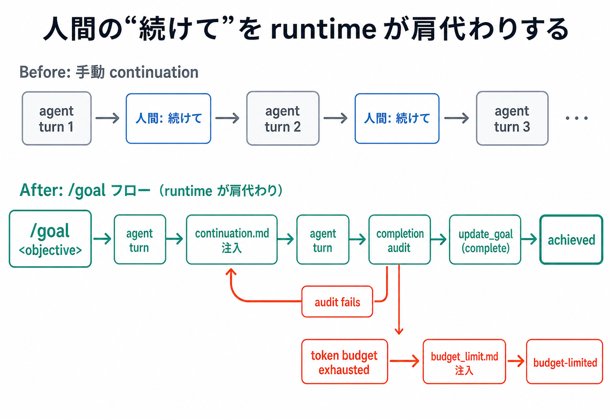
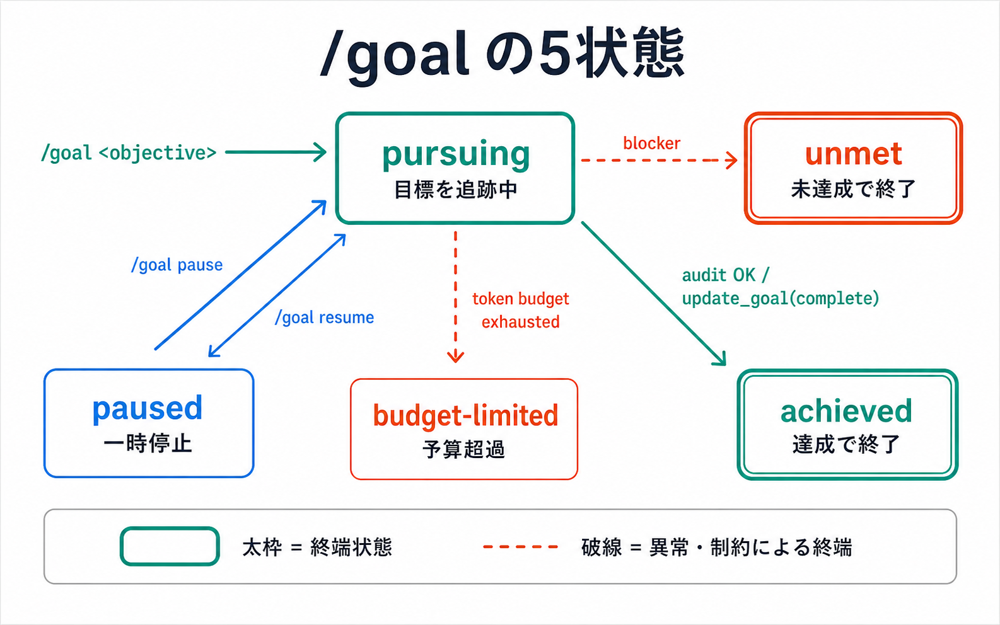
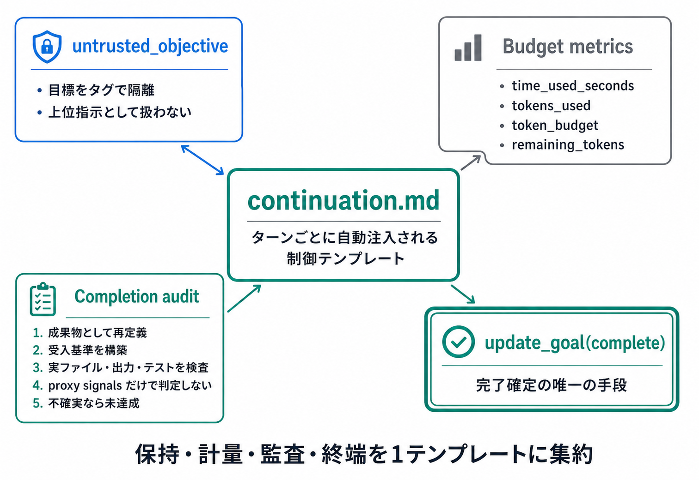
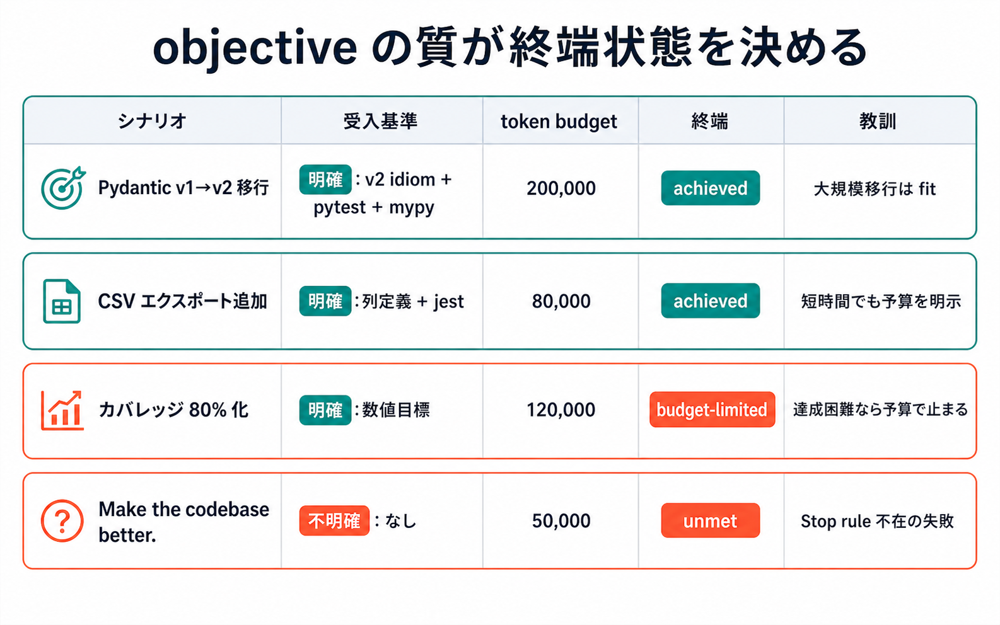
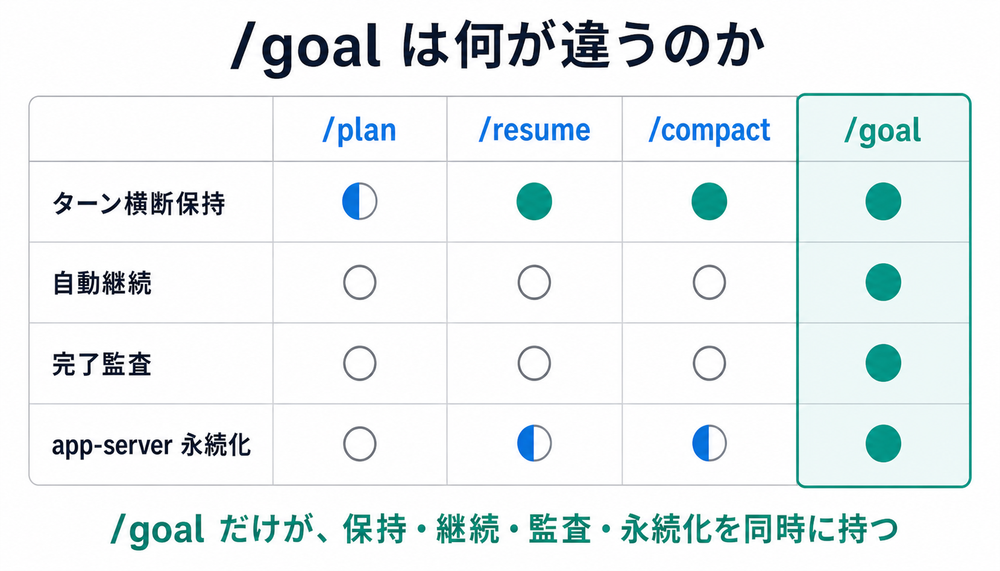
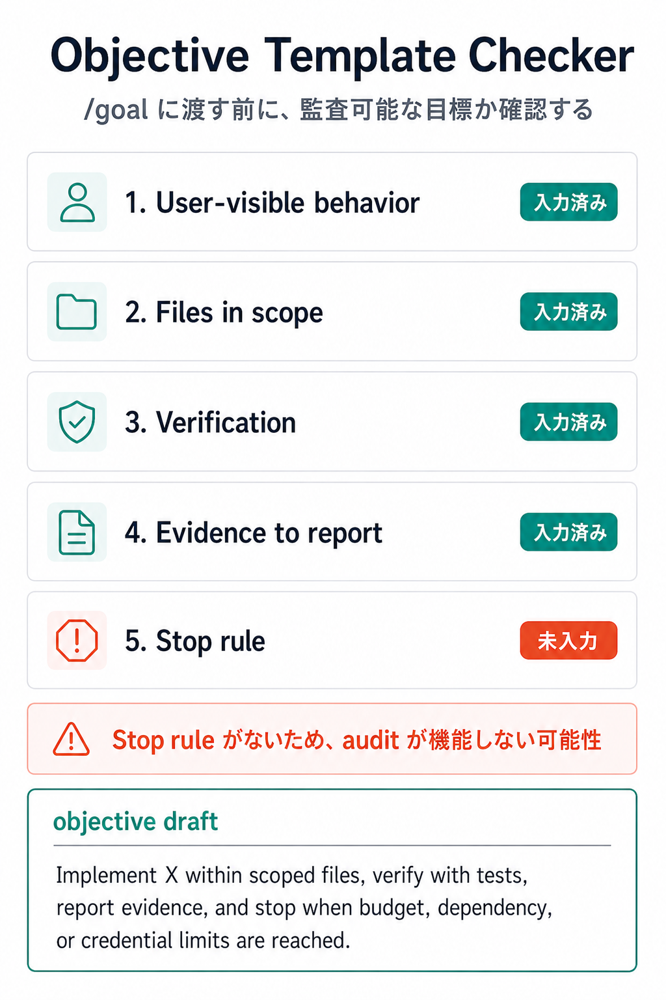

Codex /goalとは？「続けて」連打を自動化する仕組み¶

図: 人間が繰り返していた「続けて」を、/goal が継続・監査・完了判定の runtime loop に移す。
対象 / ポイント
対象: enterprise 環境で coding agent を運用する DevOps / プラットフォームエンジニア
ポイント:
/goalはターン横断で目標を保持し、達成・予算超過・ブロッカーまで自動ループする- 完了判定は proxy signals ではなく、実ファイル・出力・テスト結果の監査で行う設計
- objective の Stop rule 不在が最大の運用落とし穴になる
AIエージェントに大きな修正を任せると、一番面倒なのは「まだ終わっていないので続けて」と何度も戻す作業だ。毎ターンの結果を読んで、また「続けて」と打つ。Codex CLI 0.128.0 の /goal は、この連打をコマンド側に移した機能である。5
この記事の問いは、/goal がどうやって「続けて」を安全な状態マシンに変えたのかである。 Codex CLI 全体の導入、実行モード、料金、関連ガイドの入口は Codex CLI 完全ガイド にまとめている。 実際に /goal へ何を書けばよいかは、 Codex /goal活用ガイド でサンプルベースに整理している。
この「同じ目標に何度も戻す」実行パターンは、Ralph loop と呼ばれる。Geoffrey Huntley 氏の原典では、最小形は bash loop として紹介されている。6 /goal はその発想を、プロンプトテンプレート、状態、予算、永続化 API へ分解している。
手元で /goal が使えない場合
/goal は shell の codex goal サブコマンドではなく、Codex CLI の対話TUI内で使うスラッシュコマンドである。 そのため、通常の端末、codex exec、Codex Desktop の会話欄で /goal と打っても起動しない。 さらに一部ビルドでは goals feature flag がまだ無効で、codex features list で goals ... false と表示される。 実験機能として試す場合は codex features enable goals で有効化する。 ただし、対話TUI側で /goal が露出しているビルドが前提で、安定版として全環境に出ている機能ではない。
なぜ「続けて」連打が公式機能になったのか¶
このセクションが答える問い: /goal は従来の「次の1ターン」指示と何が違うのか。
結論から言えば、/goal は「続けて」と人間が毎回言う作業を、Codex 側のランタイム責務に移した。Simon Willison 氏は 2026年4月30日のメモで、Codex CLI 0.128.0 が Ralph loop の OpenAI 版を追加したと捉え、continuation.md と budget_limit.md がターン末尾に自動注入される点を指摘している。7
従来の対話では、1ターンが終わるたびにユーザーが進捗を読み、「まだ終わっていないので続けて」と指示する必要があった。長時間の移行、テスト修復、品質改善では、この手動確認が最大の摩擦になる。/goal は objective、使用時間、token budget、残予算を持ち回り、次の具体アクションを選ばせる。

図: ターン終了時に continuation.md がエージェントに自動注入される。完了は audit 通過時の update_goal ツール呼び出しでのみ確定する。
ただし、これは「無限に動く」機能ではない。budget_limit.md は token budget 到達時に、新しい実作業を始めず、進捗・残作業・次の入力をまとめて終えるよう促す。2 つまり /goal の価値は、無制限の自律性ではなく、終端条件つきの反復にある。
状態マシンとして見る /goal¶
このセクションが答える問い: /goal の lifecycle は、どの状態と遷移で理解できるのか。
/goal は、自然文プロンプトだけでなく状態マシンとして捉えると誤解が減る。Issue #20536 のローカル検証報告は、pursuing、paused、achieved、unmet、budget-limited という状態面を挙げている。4 これは公式ドキュメント化前の issue 情報であり、本文では中確度の観測として扱う。
初期状態は pursuing だ。ユーザーが /goal <objective> を設定すると、Codex は objective を保持し、各ターンで未達項目を検査しながら続行する。/goal pause は一時停止、/goal resume は再開、/goal clear は保持目標の削除に相当する。

図: /goal が定義する5状態と遷移条件。実線は正常完了、破線は異常終端。
重要なのは、achieved が自己申告で決まらない点だ。continuation.md は、目標を成果物や成功基準に言い換え、明示要件を evidence に対応させ、ファイル・コマンド出力・テスト結果・PR状態などを検査するよう求める。1 「テストが通った」「実装量が多い」といった proxy signals は、それだけでは完了根拠にならない。
unmet は、ブロッカーや不確実性が残り、 productive に続行できない状態として読むべきだ。budget-limited は token budget による停止であり、失敗そのものではない。残作業と次の入力が明確なら、budget を増やして再開できる。
continuation.md と budget_limit.md¶
このセクションが答える問い: /goal の自律ループは、どんなプロンプト設計で支えられているのか。
設計の核心は continuation.md に集約されている。ユーザーの objective は <untrusted_objective> タグに入れられ、上位指示ではなく追跡対象のデータとして扱われる。1 これは prompt injection 耐性のためだけでなく、objective を監査対象として固定する役割も持つ。

図: ターンごとに注入されるテンプレートは、目標保持・計量・監査・終端の4責務を担う。完了判定の責務を update_goal ツール呼び出しに集中させた点が設計の核心。
continuation.md は4つの責務を持つ。第一に objective の保持、第二に time / token の計量、第三に completion audit、第四に update_goal による完了確定だ。ここでの audit は、プロンプトから成果物への checklist を作り、各要件に証拠を対応させる作業である。
budget_limit.md は、同じ objective と使用量を見せつつ、すでに budget_limited とマークされた前提で動く。新しい実作業を始めず、進捗・残作業・ブロッカー・次の手順を短くまとめる。2 Ralph loop の危険は「止まれない」ことだが、/goal は予算到達時のふるまいを別テンプレートに切り出している。
app-server 側にも同じ考え方が見える。README は thread/goal/set、thread/goal/get、thread/goal/clear、thread/goal/updated、thread/goal/cleared を列挙し、objective や token budget、usage accounting を thread に紐づける。3 目標は会話の気分ではなく、永続化された thread state になる。
実際に何が起きるのか¶
このセクションが答える問い: objective の書き方は、終端状態にどう影響するのか。
/goal の成否は、モデルの性能だけで決まらない。objective に受入基準、対象ファイル、検証方法、報告すべき証拠、Stop rule が入っているかで変わる。同じ 120,000 tokens でも、数値目標が検証可能なら budget-limited で健全に止まれるが、曖昧な改善指示では unmet に寄りやすい。

図: 受入基準の質が終端状態を決める。曖昧な目標は budget を消費しても unmet で終わる。
| シナリオ | 受入基準 | 予算 | 終端 | 教訓 |
|---|---|---|---|---|
| Pydantic v1→v2 移行 | 明確: 全ファイル v2 idiom、pytest pass、mypy clean | 200,000 | achieved | 大規模移行は典型的な fit |
| CSV エクスポート機能追加 | 明確: 列定義、ファイルスコープ、jest pass | 80,000 | achieved | 短時間タスクでも budget 明示 |
| カバレッジ 80% 化 | 明確: 数値目標 | 120,000 | budget-limited | 数値が達成困難な場合の挙動が見える |
Make the codebase better. | 不明確: なし | 50,000 | unmet | Stop rule 不在の典型失敗 |
Pydantic v1→v2 移行のようなタスクでは、変更対象と成功条件を列挙できる。CSV エクスポートも、列定義、対象モジュール、jest の検証で閉じられる。この2つは /goal と相性がいい。
一方、カバレッジ 80% 化は数値目標が明確でも、予算内に到達できるとは限らない。ここで budget-limited は有益な終端になる。どのテストが追加済みで、どの領域が残り、追加予算で何をすべきかが残れば、次の判断ができる。
危険なのは Make the codebase better. だ。良さの定義、対象範囲、検証コマンド、止める条件がないため、audit が機能しない。enterprise 環境では、この形式の objective を許可しないほうがよい。
/plan, /resume, /compact との関係¶
このセクションが答える問い: /goal は周辺のスラッシュコマンドとどう違うのか。
/plan、/resume、/compact はいずれも長い作業に関係するが、責務は異なる。/plan は作業前の構造化、/resume は過去セッションの再開、/compact は文脈圧縮だ。/goal はそれらを置き換えるのではなく、目標保持と完了監査の lifecycle を追加する。

図: /goal は他コマンドと異なり、ターン横断保持・自動継続・完了監査・永続化の4要件を満たす唯一のスラッシュコマンド。
/plan は「何をするか」を整理するが、次ターンで自動的に監査して継続する保証ではない。/resume は thread を再び開くが、objective と budget を lifecycle として持つとは限らない。/compact は context window の管理であり、終了条件の管理ではない。
だから /goal は、enterprise の標準運用では単独で使うよりも、/plan で受入基準を固めてから設定するのが堅い。設計と実行を分けることで、エージェントに「何を達成したら止まるか」を渡せる。
落とし穴と Stop rule の必須化¶
このセクションが答える問い: enterprise 運用で /goal を安全に使うには、何を強制すべきか。
最大の落とし穴は、objective を願望文として書くことだ。/goal は目標を保持してくれるが、目標の品質までは保証しない。Stop rule がなければ、audit は「まだ改善できる」という無限の余地に引きずられる。
enterprise 運用では、objective を5要素テンプレートに固定したほうがよい。
- user-visible behavior: ユーザーから見える変化
- files in scope: 変更してよい範囲
- verification: 実行するコマンド、テスト、ログ
- evidence to report: 完了時に報告する証拠
- stop rule: 予算、依存関係、credential、承認待ちで止める条件

図: Stop rule が未入力の objective は、/goal の audit が機能しない可能性を残す。
実際に5要素を埋める場合は、下の対話ウィジェットで objective draft を生成できる。
ウィジェット: 5要素テンプレートの埋まり具合を確認できる。Stop rule の入力漏れが最も多い失敗パターン。
Stop rule はエージェントを弱くする制約ではない。長時間作業をレビュー可能な単位に分割するための運用契約だ。token budget、外部依存、credential 不足、レビュー待ちを明示すれば、budget-limited や unmet は失敗ログではなく、次の判断材料になる。
関連トピックとして、Claude Managed Outcomes との比較、harness 五層モデルにおける /goal の位置づけ、競合製品との詳細ベンチマークは別記事で扱う予定だ。本稿で押さえるべき結論は1つである。/goal は Ralph loop を「止まれる状態マシン」にした。
openai/codex,
codex-rs/core/templates/goals/continuation.mdat commit6014b66. ↩↩openai/codex,
codex-rs/core/templates/goals/budget_limit.mdat commit6014b66. ↩↩openai/codex,
codex-rs/app-server/README.md. ↩openai/codex Issue #20536, Document the /goal CLI command and Goals lifecycle in slash-command docs. ↩
openai/codex release tag,
rust-v0.128.0. ↩Geoffrey Huntley, Ralph Wiggum as a "software engineer". ↩
Simon Willison, Codex CLI 0.128.0 adds /goal. ↩